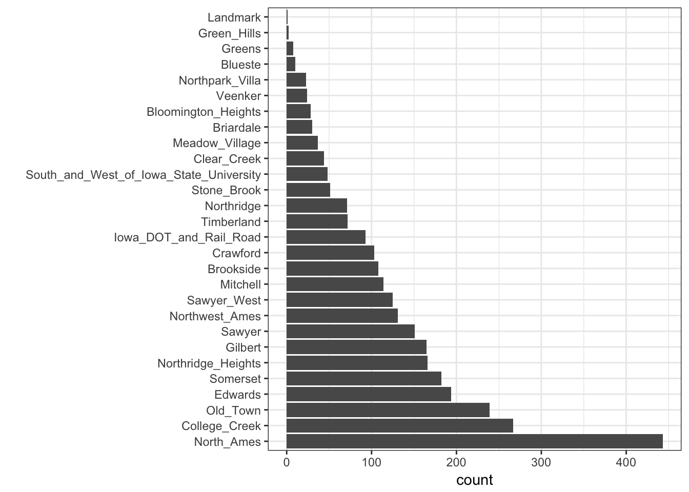
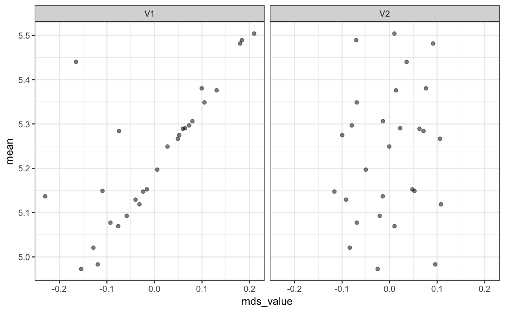
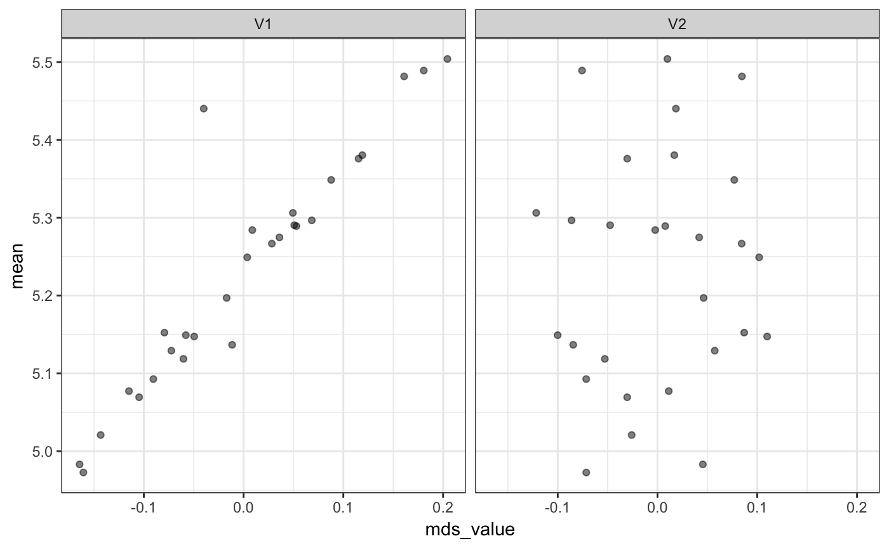

Tensorflow.RmdThe approach encodes categorical data as multiple numeric variables using a word embedding approach. Originally intended as a way to take a large number of word identifiers and represent them in a smaller dimension. Good references on this are Guo and Berkhahn (2016) and Chapter 6 of Francois and Allaire (2018).
The methodology first translates the C factor levels as a set of integer values then randomly allocates them to the new D numeric columns. These columns are optionally connected in a neural network to an intermediate layer of hidden units. This implementation uses a single layer with ReLu activations. Finally, an output layer is used with either linear activation (for numeric outcomes) or softmax (for classification).
To translate this model to a set of embeddings, the coefficients of the original embedding layer are used to represent the original factor levels.
As an example, we use the Ames housing data where the sale price of houses are being predicted. One predictor, neighborhood, has the most factor levels of the predictors.
## [1] 28The distribution of data in the neighborhood is not uniform:

Fo plotting later, we calculate the simple means per neighborhood:
means <- ames %>%
group_by(Neighborhood) %>%
summarise(
mean = mean(log10(Sale_Price)),
n = length(Sale_Price),
lon = median(Longitude),
lat = median(Latitude)
)First, we’ll fit a model with no hidden units and 10 encoding columns:
library(embed)
tf_linear <- recipe(Sale_Price ~ Neighborhood + MS_SubClass, data = ames) %>%
step_log(Sale_Price, base = 10) %>%
step_tfembed(
Neighborhood, outcome = vars(Sale_Price),
number = 10,
options = tfembed_control(epochs = 50)
) %>%
prep(training = ames)The embeddings are obtained using the tidy method:
## # A tibble: 29 x 12
## emb01 emb02 emb03 emb04 emb05 emb06 emb07 emb08 emb09
## <dbl> <dbl> <dbl> <dbl> <dbl> <dbl> <dbl> <dbl> <dbl>
## 1 0.0182 0.0491 -0.0475 0.0270 -0.00214 -0.0463 0.0205 0.0183 -2.84e-2
## 2 0.137 0.102 -0.0805 0.0980 0.00958 -0.0988 -0.0527 0.0714 -6.53e-2
## 3 0.170 0.122 -0.0857 0.132 -0.0300 -0.176 -0.0286 -0.0209 -8.69e-2
## 4 0.0806 0.0774 -0.00667 0.153 -0.0454 -0.0424 -0.0796 0.0495 -4.56e-2
## 5 0.114 0.0879 -0.0123 0.113 -0.0188 -0.104 -0.0392 0.0177 -1.82e-2
## 6 0.210 0.0993 -0.0899 0.158 -0.0406 -0.160 -0.0581 -0.0118 -8.55e-2
## 7 0.206 0.106 -0.103 0.206 0.0177 -0.222 -0.134 0.0385 -5.01e-2
## 8 0.154 0.105 -0.117 0.176 0.0214 -0.133 -0.0457 0.0428 -3.42e-4
## 9 0.136 0.125 -0.00981 0.124 -0.00811 -0.0983 -0.0124 -0.0267 -5.17e-2
## 10 0.104 0.115 -0.0991 0.183 0.00121 -0.152 -0.0698 -0.0284 -7.78e-2
## # ... with 19 more rows, and 3 more variables: emb10 <dbl>, level <chr>,
## # terms <chr>linear_coef <- linear_coef %>%
dplyr::rename(Neighborhood = level) %>%
inner_join(means, by = "Neighborhood")There is some columns that are correlated with the outcome:
## emb01 emb02 emb03 emb04 emb05 emb06 emb07 emb08 emb09 emb10
## 0.63 0.40 -0.62 0.53 0.33 -0.69 -0.70 -0.20 -0.25 -0.41However, this has induced some between-predictor correlations.
Multidimensional scaling is used to see if there is any information in the data that is associated with the outcome:
lin_mds <- linear_coef %>%
dplyr::select(starts_with("emb")) %>%
dist() %>%
sammon(trace = FALSE)
lin_mds$points %>%
as.data.frame() %>%
bind_cols(linear_coef %>% dplyr::select(Neighborhood, mean)) %>%
gather(comp, mds_value, -Neighborhood, -mean) %>%
ggplot(aes(x = mds_value, y = mean)) +
geom_point(alpha = 0.5) +
facet_wrap(~comp) +
theme_bw()
Note that, since these methods are supervised, using the new encodings in a model where the same data are being used, the estimate of model performance may yield overly optimistic results.
Now let’s fit a more complex model with a layer of hidden units.
tf_nlin <- recipe(Sale_Price ~ Neighborhood + MS_SubClass, data = ames) %>%
step_log(Sale_Price, base = 10) %>%
step_tfembed(
Neighborhood, outcome = vars(Sale_Price),
number = 10,
hidden = 50,
options = tfembed_control(epochs = 50)
) %>%
prep(training = ames)
nlin_coef <- tidy(tf_nlin, number = 2) %>%
dplyr::rename(Neighborhood = level) %>%
inner_join(means, by = "Neighborhood")## Warning: Column `Neighborhood` joining character vector and factor,
## coercing into character vector## emb01 emb02 emb03 emb04 emb05 emb06 emb07 emb08 emb09 emb10
## -0.77 -0.63 0.62 -0.71 -0.65 -0.86 -0.33 -0.32 -0.49 -0.75nlin_mds <- nlin_coef %>%
# dplyr::filter(Neighborhood != "..new") %>%
dplyr::select(starts_with("emb")) %>%
dist() %>%
sammon(trace = FALSE)
nlin_mds$points %>%
as.data.frame() %>%
bind_cols(nlin_coef %>% dplyr::select(Neighborhood, mean)) %>%
gather(comp, mds_value, -Neighborhood, -mean) %>%
ggplot(aes(x = mds_value, y = mean)) +
geom_point(alpha = 0.5) +
facet_wrap(~comp) +
theme_bw()
Arguably, there appears to be a slightly better association with the sample means using the extra layer.
The new levels are encoded as:
## # A tibble: 1 x 10
## emb01 emb02 emb03 emb04 emb05 emb06 emb07 emb08 emb09
## <dbl> <dbl> <dbl> <dbl> <dbl> <dbl> <dbl> <dbl> <dbl>
## 1 -0.00877 -0.0351 0.0478 -0.0119 -0.0209 -0.0376 0.0181 -0.0451 0.0381
## # ... with 1 more variable: emb10 <dbl>